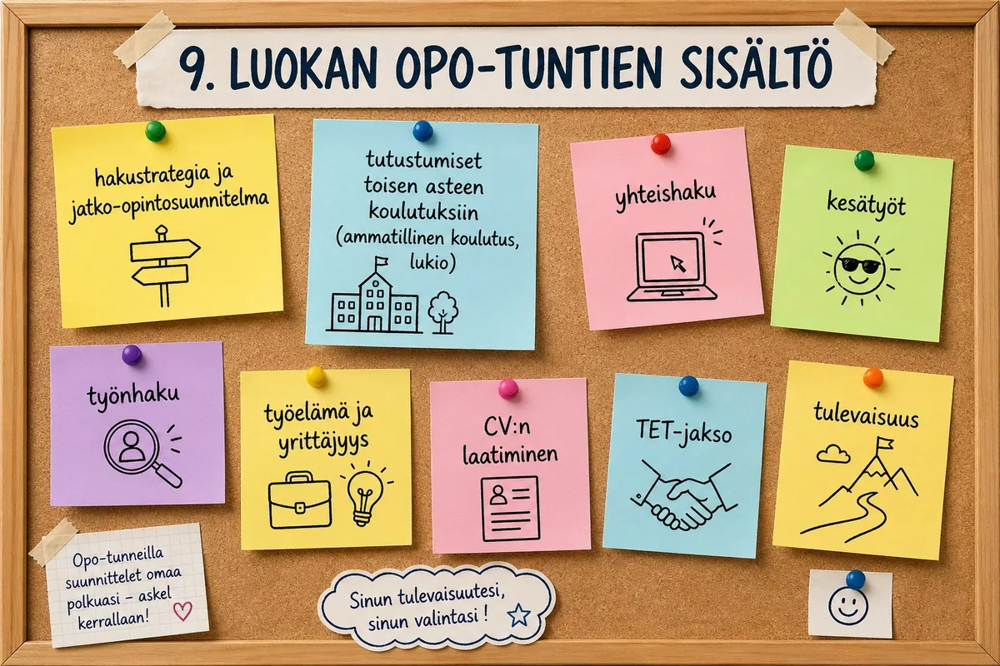
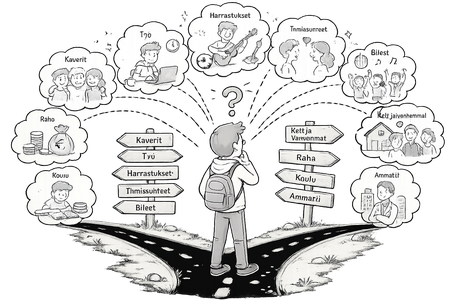

Tänä vuonna valmistaudut yhteishakuun ja teet päätöksiä, jotka vievät
sinut eteenpäin. Ei tarvitse tietää kaikkea – riittää että otat
seuraavan askeleen.
Opo-tunnit 9.luokalla
Polku valintoihin – vuoden teemat
Tänä vuonna
Tänä vuonna teet tärkeimmän valinnan tähän mennessä: minne peruskoulun jälkeen?
Tällä tunnilla rakennat strategian, harjoittelet hakemista ja opit tuntemaan itsesi paremmin
— niin että valinta tuntuu omalta.

🔍 Suurenna
Ysi luokka edessä - suunnitelma taskuun!
Mitä 9. luokalla tapahtuu – ja miten suunnittelet oman polkusi?
Eri polkuja
Peruskoulun jälkeen voit jatkaa lukioon, ammatilliseen
koulutukseen tai TUVA-koulutukseen. Jokainen polku johtaa
eteenpäin – ne vain kulkevat eri reittejä.
Ei ole yhtä oikeaa tapaa.
Laske oma keskiarvosi
Yksilötehtävä
Selvitä omat lähtökohtasi yhteishakuun laskemalla keskiarvosi ja arvioimalla hakupisteesi.
Laske viimeisimmän todistuksesi aineiden keskiarvo.
Käytä laskuria selvittääksesi keskiarvosi lukioon ja hakupisteet ammatilliseen koulutukseen.
Vertaa pisteitäsi viime vuoden alimpiin hyväksyttyihin pisteisiin Opintopolku.fi:ssä.
⏱ Aika: 10–15 min
Tehtävä 1
Laske omat keskiarvosi tai hakupisteesi
Tiedätkö, miten paljon sinulla on pisteitä yhteishaussa? Laske oma keskiarvosi ja hakupisteesi ammatilliseen koulutukseen.
Rakenna oma lukuvuosisuunnitelma
Yksilötehtävä
Avaa vuosikello ja täydennä se omilla tapahtumillasi. Kalenteri tallentuu automaattisesti, joten voit palata siihen milloin tahansa.
Lisää koulusi TET-jakson ajankohta.
Merkitse yhteishaun tärkeät päivämäärät.
Lisää omat muistutuksesi ja tapahtumasi.
⏱ Aika: 15–20 min — kalenteri jää talteen
Tehtävä 2
Tee oma vuosikello
Merkitse kaikki 9. luokan tärkeät tapahtumat omaan kalenteriisi – koulun tapahtumat, TET-jakso, yhteishaku ja omat muistutuksesi.
🧭
Ryhmätehtävä · 20–25 min
Neuvonantaja — päätöksentekoa yhdessä
Tässä tehtävässä harjoittelet päätöksentekoa — ei omalla valinnallasi
vaan neuvomalla fiktiivistä henkilöä. Sama taito auttaa kaikissa
elämän isoissa valinnoissa.
Vaihe 1 · Yksilö · 3 min
Päätöstyökalu
Hyvä päätös ei tarkoita oikeaa vastausta — se tarkoittaa,
että olet miettinyt asiaa monelta kantilta.
Tässä on neljän kohdan malli, jota käytät tehtävässä:
✅
Puolesta
Mitkä asiat tukevat tätä valintaa?
❌
Vastaan
Mikä mietityttää tai pelottaa?
❓
En tiedä
Mitä tietoa tarvitsisin lisää?
💬
Miltä tuntuu
Mitä vatsa sanoo — vaikka järki sanoisi muuta?
Vaihe 2 · Ryhmä · 12 min
Valitse henkilö ja neuvo
Ryhmänne valitsee yhden henkilön. Käykää päätöstyökalu läpi
hänen puolestaan — mitä te neuvoisitte?
🧑🔧Joonas, 15
Joonas haluaisi autoasentajaksi — se on aina kiinnostanut.
Isä toivoo kuitenkin lukiota: "Sieltä pääset joka paikkaan."
Kaveriporukka menee lukioon. Arvosanat: 7–8.
Joonas miettii: haluanko minä lukioon vai meneekö sinne
siksi, että muutkin menevät?
👩🎨Aisha, 15
Aisha ei tiedä vielä, mitä haluaa. Kielistä ja piirtämisestä
on pitänyt aina, mutta niistä ei tunnu saavan töitä.
Hän pelkää tekevänsä väärän valinnan —
"Entä jos kadun?"
Hakuaika lähestyy ja se stressaa.
🧑🌾Mikael, 15
Mikael haluaa lukioon, mutta lähimmät lukiot ovat
kaukana — pitäisi muuttaa tai tehdä pitkä koulumatka.
Hän ei halua lähteä pois kotoa.
"Pitääkö minun luopua lukiosta sen takia?"
Ryhmänne tehtävä — käykää järjestyksessä:
Lukekaa valitsemanne henkilön tarina.
Täyttäkää päätöstyökalu hänen puolestaan: Puolesta · Vastaan · En tiedä · Miltä tuntuu
Sopikaa ryhmässä: mitä neuvoisitte hänelle?
Valmistautukaa kertomaan yksi neuvo koko luokalle.
Vaihe 3 · Koko luokka · 5 min
Neuvo ääneen
Jokainen ryhmä kertoo yhden neuvon valitsemalleen henkilölle.
→
Mistä asioista ryhmät olivat yhtä mieltä?
→
Mistä eri mieltä — miksi?
→
Miksi toisen päätökseen on niin vaikea antaa neuvoa?
Mitä se kertoo päätöksenteosta?
Muista: Ei ole olemassa yhtä oikeaa polkua.
Hyvä päätös tarkoittaa, että olet miettinyt asiaa — ei sitä,
että valinta on varma tai peruuttamaton.
Polkuja voi aina muuttaa.
Oma reitti löytyy tutkimalla
💡 Tämä sama tehtävä on myös 8. luokan sivulla. Voit tehdä sen uudelleen — ajatuksesi ja kiinnostuksen kohteesi ovat voineet vuodessa muuttua.
👇
Tutki ennen kuin valitset
Tutustu tutkintoihin ja lukiolinjoihin tarkemmin — valitse Amispolku tai Lukiopolku alta. Voit tutkia molempia.
Oma reitti löytyy tutkimalla
Tutki ennen kuin valitset — voit tutkia molempia polkuja
Ammatillisessa koulutuksessa opit tekemällä. Valitse kiinnostava aihe ja katso, mitä tutkintoja on tarjolla.
🎯 Mitä teet tässä tehtävässä?
Valitset kiinnostavan alan ja tutustut ammatillisiin tutkintoihin (Vaihe 1)
Kurkistat ammatillisen koulun arkeen ja ammattilaisen työpäivään (Vaihe 2)
Teet oman alasi interaktiivisen tehtävän (Vaihe 3)
Näet, mihin amis johtaa — jatko-opintomahdollisuudet (Vaihe 4)
1
Valitse kiinnostava ala
2
Kurkista kouluarkeen & työpäivään
3
Tee alan tehtävä
4
Mihin amis johtaa?
Vaihe 1Valitse kiinnostava ala
Kaikki tutkinnot
Ei tuloksia valituilla kiinnostuksilla.
Jos tarvitset enemmän tukea opiskelussa, erityisammattioppilaitokset tarjoavat saman ammatillisen koulutuksen — pienemmissä ryhmissä ja yksilöllisemmin. Haetaan samassa yhteishaussa opintopolku.fi:ssä.
Aitoon koulutuskeskus
Pälkäne ja Tampere. Valmentava koulutus ja ammatilliset perustutkinnot opiskelijoille, jotka tarvitsevat enemmän tukea.
👆 Valitse Vaihe 1:ssä jokin kiinnostava ala — sopiva ammattitilanne ilmestyy tähän automaattisesti.
Vaihe 4Amispolun jälkeen — mihin voi hakea?
Ammatillinen tutkinto ei pysäytä opintopolkua. Se avaa suoran oven ammattikorkeakouluun — yo-kirjoituksia ei tarvita.
🎓 AMK — ammattikorkeakoulu
Ammatillisen perustutkinnon jälkeen voit hakea ammattikorkeakouluun (AMK) suoraan — yo-kirjoituksia ei tarvita. Haku opintopolku.fi:ssä. Kesto 3½–4 vuotta. Tutkinto: AMK-tutkinto.
💡 Väyläopinnot: osa AMK:ista tarjoaa väyläopintoja, joiden kautta voi hakea ilman pääsykoetta — kysy suoraan oppilaitokselta.
🔬 Yliopisto — avoimen kautta
Yliopistoon voi hakea myöhemmin avoimen yliopiston väylää pitkin tai suorittaa ylioppilaskirjoitukset aikuisena. Reitti on pidempi, mutta mahdollinen.
Esimerkkejä — mitä AMK:ssa voi opiskella amispolun jälkeen?
AMK
Sairaanhoitaja
Sote-alalta eteenpäin. Kesto 3½ v. Hyvä työllistyvyys.
📍 Metropolia, TAMK, Savonia
AMK
Insinööri (AMK)
Tekniikan alalta eteenpäin. Sähkö, kone, rakennus, automaatio.
📍 Metropolia, TAMK, OAMK
AMK
Tradenomi
Kaupan alalta eteenpäin. Taloushallinto, markkinointi, yrittäjyys.
📍 HAAGA-HELIA, Metropolia
AMK
Tietojenkäsittely
IT-alalta eteenpäin. Ohjelmistokehitys, kyberturvallisuus, data.
📍 Metropolia, TAMK, Laurea
AMK
Sosionomi
Ihmiset-alalta eteenpäin. Lastensuojelu, nuorisotyö, sosiaalipalvelut.
📍 Metropolia, DIAK, LAMK
AMK
Restonomi
Ravintola- ja matkailualalta eteenpäin. Hotelli, catering, tapahtumat.
📍 HAAGA-HELIA, Lapin AMK
AMK
Liikunnanohjaaja (AMK)
Liikunta-alalta eteenpäin. Personal training, ohjaus, hyvinvointi.
📍 JAMK, HAAGA-HELIA, Kajaani AMK
AMK
Metsätalousinsinööri (AMK)
Luonto-alalta eteenpäin. Metsätalous, luonnonvarat, ympäristö.
📍 Karelia-AMK, HAMK, Lapin AMK
AMK
Medianomi (AMK)
Taide- ja media-alalta eteenpäin. Visuaalinen viestintä, video, animaatio, digitaalinen media.
Tehtävä sisältää kaksi polkua, joita oppilas tutkii omien kiinnostustensa mukaan:
Amispolku — oppilas tutkii ammatillisia tutkintoja, tutustuu kouluarkeen ja ammattilaisen työpäivään, ja tekee interaktiivisen pelitehtävän oman alansa mukaan. Palautus Classroomiin.
Lukiopolku — oppilas tutkii lukiolinjoja ja erikoislukioita, tutustuu lukioarjen tarinoihin ja jatko-opintovaihtoehtoihin, ja laatii oman lukiosuunnitelman. Palautus Classroomiin.
Oppilas etenee omassa polussa oman etenemisjärjestyksensä mukaan. Molempia polkuja voi käyttää saman tunnin aikana.
Mikä ajattelija sinä olet?
Harjoittele viittä eri ajattelutapaa – yksin, pareittain tai ryhmässä
Tehtävä 1
Tunne kaikki viisi — löydä oma vahvuutesi.
🔍
Kriittinen
Arvioi ja kyseenalaista
💡
Lateraalinen
Ajattele sivuttain
🧩
Looginen
Päättele askel askeleelta
🎨
Luova
Keksi uusia ideoita
🪞
Reflektiivinen
Pohdi omaa oppimista
Tehtävä 2
🔍
Ryhmäpeli · Ajattelutaidot
🕵️ Salapoliisitehtävä — Kadonnut kultainen kello
Professori Virtasen kultainen taskukello on varastettu museosta. Epäiltyjä on neljä.
Jokainen ryhmänjäsen saa omat vihjekorttinsa — selvittäkää yhdessä kuka teki sen, miten ja miksi.
⏱ 25–35 min · 👥 4 oppilasta / ryhmä · 📄 Tulostettavat kortit
Opo ottaa sopimuksen talteen ja tarkistaa sen. Vähän ennen TET-viikon alkua opo antaa sopimuksen oppilaalle takaisin.
Tarvittaessa opo antaa myös matkaliput TET-paikkaan kulkemista varten.
🎫 Muista: kysy opolta matkaliput jos tarvitset!
5. TET-harjoitteluviikko
Oppilas menee TET-paikkaan työsopimuksen ja mahdollisten matkalippujen kanssa. Harjoittelu alkaa!
💼 Tee töitä ahkerasti, ole ajoissa ja käyttäydy asiallisesti.
6. Työtodistus opolle
TET-harjoittelun päätyttyä työnantaja kirjoittaa oppilaalle työtodistuksen. Oppilas toimittaa työtodistuksen opolle.
🏅 TET-harjoittelu on nyt suoritettu – hienoa työtä!
TET-peli
Duuniin! Opas työelämään.
Harjoittele oikeita tilanteita ennen TET-harjoittelua.
Klikkaa suurentaaksesi
Tehtävä TET:n jälkeen
TET-jakson jälkeen – mitä opit?
Käy TET-jakso läpi ja pohdi, mitä kokemus kertoo sinusta ja tulevaisuudestasi.
🧠
Lisätehtävä TET:n jälkeen · Yksin · 8–10 min
Miten minä opin?
TET-jakso ei opeta vain työelämästä — se kertoo myös siitä,
miten sinä opit. Pohdi hetki, miten parhaiten
opit uusia asioita.
1
Valitse tai kirjoita omin sanoin. Opitko parhaiten
tekemällä itse, seuraamalla muita,
kysymällä vai lukemalla ja kuuntelemalla?
Voit valita useamman tavan.
2
Mitä tapahtui? Miten se oppi syntyi — tehtiinkö jotain,
selitettiinkö sinulle, vai hoksasitko itse? Pieni esimerkki riittää.
3
Missä tilanteessa oppiminen on sinulle helppoa?
Onko jotain, mikä tekee oppimisesta vaikeampaa?
Voi olla koulusta, harrastuksista tai muualta elämästä.
⭐
Haluatko miettiä lisää? — valinnainen kysymys
Voit kuvitella tilanteen, jossa opettelu on juuri sellaista kuin haluaisit.
Mitä siinä tapahtuu?
Miksi tämä on tärkeää?
Kun tiedät, miten opit parhaiten, voit etsiä töitä ja opiskelupaikkoja,
joissa oppiminen tapahtuu sinulle sopivalla tavalla.
Oman vahvuuden testi
DuuniMinä
DuuniMinä ei arvioi sinua – se näyttää, missä olet luontaisesti
vahva. Tee testi ja katso, millä alalla vahvuutesi loistavat.
Yksilötehtävä
Pakkaa vahvuudet reppuusi – tee oma CV
Kokoat tähän kaikki vahvuutesi 7. ja 8. luokalta – ja valmistat ensimmäisen oman CV:si.
Sisältää TET-kokonaisuuden rakenteen (ennen–aikana–jälkeen), ohjeet TET-pelille, purkutehtävälle, Miten minä opin? -tehtävälle, DuuniMinä-testille ja Reppu + CV -tehtävälle, aikataulusuosituksen sekä arviointikriteerit.
Päätöksentaitoja
Miten tehdä hyviä päätöksiä — myös vaikeiden valintojen edessä?
Tieteellinen tausta
Päätöksentekoa on tutkittu laajasti kognitiivisessa psykologiassa. Daniel Kahneman (Nobel 2002) osoitti, että ihmisillä on kaksi ajattelujärjestelmää: nopea, automaattinen (tunne, vaisto) ja hidas, harkitseva (analyysi, järki). Hyvä päätöksenteko vaatii molempia.
Nuorten päätöksentekoon vaikuttaa erityisesti sosiaalinen paine — vertaisryhmän mielipide painaa usein enemmän kuin oma harkinta. Tämä on kehitysvaiheeseen liittyvä normaali ilmiö, ei heikkous.
Päätöksentekomalli puolesta / vastaan / en tiedä / miltä tuntuu pohjautuu kognitiiviseen käyttäytymisterapiaan (KKT) ja ns. PMI-menetelmään (Plus / Minus / Interesting), jonka kehitti Edward de Bono.
Lähteet
Kahneman, D. (2011). Thinking, Fast and Slow. Farrar, Straus and Giroux.
De Bono, E. (1985). Six Thinking Hats. Little, Brown.
Isot valinnat — kuten mitä kouluun hakea — voivat tuntua vaikeilta.
Kukaan ei tiedä etukäteen, mikä on oikea valinta.
Hyvä päätös ei tarkoita, että olet varma. Se tarkoittaa, että olet
miettinyt asiaa usealta kantilta. Tällä tunnilla harjoittelet sitä
— neuvomalla fiktiivistä henkilöä.
🧭
Ryhmätehtävä · 20–25 min
Neuvonantaja — päätöksentekoa yhdessä
Tässä tehtävässä harjoittelet päätöksentekoa — ei omalla valinnallasi
vaan neuvomalla fiktiivistä henkilöä. Sama taito auttaa kaikissa
elämän isoissa valinnoissa.
Vaihe 1 · Yksilö · 3 min
Päätöstyökalu
Hyvä päätös ei tarkoita oikeaa vastausta — se tarkoittaa,
että olet miettinyt asiaa monelta kantilta.
Tässä on neljän kohdan malli, jota käytät tehtävässä:
Vaihe 2 · Ryhmä · 12 min
Valitse henkilö ja neuvo
Ryhmänne valitsee yhden henkilön. Käykää päätöstyökalu läpi
hänen puolestaan — mitä te neuvoisitte?
🧑🔧Joonas, 15
Joonas haluaisi autoasentajaksi — se on aina kiinnostanut.
Isä toivoo kuitenkin lukiota: "Sieltä pääset joka paikkaan."
Kaveriporukka menee lukioon. Arvosanat: 7–8.
Joonas miettii: haluanko minä lukioon vai meneekö sinne
siksi, että muutkin menevät?
👩🎨Aisha, 15
Aisha ei tiedä vielä, mitä haluaa. Kielistä ja piirtämisestä
on pitänyt aina, mutta niistä ei tunnu saavan töitä.
Hän pelkää tekevänsä väärän valinnan —
"Entä jos kadun?"
Hakuaika lähestyy ja se stressaa.
🧑🌾Mikael, 15
Mikael haluaa lukioon, mutta lähimmät lukiot ovat
kaukana — pitäisi muuttaa tai tehdä pitkä koulumatka.
Hän ei halua lähteä pois kotoa.
"Pitääkö minun luopua lukiosta sen takia?"
Ryhmänne tehtävä — käykää järjestyksessä:
Lukekaa valitsemanne henkilön tarina.
Täyttäkää päätöstyökalu hänen puolestaan: Puolesta · Vastaan · En tiedä · Miltä tuntuu
Sopikaa ryhmässä: mitä neuvoisitte hänelle?
Valmistautukaa kertomaan yksi neuvo koko luokalle.
Vaihe 3 · Koko luokka · 5 min
Neuvo ääneen
Jokainen ryhmä kertoo yhden neuvon valitsemalleen henkilölle.
→
Mistä asioista ryhmät olivat yhtä mieltä?
→
Mistä eri mieltä — miksi?
→
Miksi toisen päätökseen on niin vaikea antaa neuvoa?
Mitä se kertoo päätöksenteosta?
Muista: Ei ole olemassa yhtä oikeaa polkua.
Hyvä päätös tarkoittaa, että olet miettinyt asiaa — ei sitä,
että valinta on varma tai peruuttamaton.
Polkuja voi aina muuttaa.
🧭
Yksilötehtävä · 10–15 min
Valitse oma skenaariosi
Kaksi tilannetta — valitse se, joka tuntuu sinulle läheisemmältä.
Pohdi, mitä tekisit ja miksi. Kukaan muu ei näe valintaasi.
Purku · Koko luokka · 5 min
Mitä hyvä päätös vaatii?
Ei avata kenenkään yksittäisiä valintoja — keskustellaan sen sijaan siitä, mitä päätöksenteko itsessään vaatii.
→
Mikä teki päätöksestä vaikean — neuvonantaja-tehnessä tai skenaariossa?
→
Onko toimimatta jättäminen myös päätös?
→
Hyvä päätös ei vaadi varmuutta — mitä se sitten vaatii?
Tunnin rakenne (45–55 min)
Johdanto (5 min): Avaa lyhyesti, mitä päätöksentekotaito tarkoittaa.
Voit kysyä: "Milloin olet tehnyt vaikean päätöksen? Miltä se tuntui?"
Kerro, että päätöksentekoa voi harjoitella — ja tällä tunnilla harjoitellaan neuvomalla toista.
Neuvonantaja-tehtävä (20–25 min): Ryhmät (3–4 opp.) valitsevat yhden
henkilökortin (Joonas, Aisha tai Mikael) ja käyvät päätöstyökalun läpi hänen puolestaan.
Jokainen ryhmä valmistautuu kertomaan yhden neuvon ääneen.
Luokkakeskustelussa (5 min) peilataan, mistä oltiin yhtä / eri mieltä ja miksi.
Skenaariotehtävä (10–15 min): Yksilötehtävä — oppilaat tekevät sen
hiljaa itsekseen. Muistuta, että kukaan muu ei näe valintoja.
Tehtävä on tarkoitettu todelliseen pohdintaan, ei "oikean vastauksen" etsimiseen.
Voit halutessasi pyytää palauttamaan kirjalliset vastaukset Classroomin kautta.
Purku (5 min): Ei avata yksittäisiä valintoja.
Sen sijaan: "Mikä teki päätöksestä vaikean? Mitä huomasit itsestäsi?"
Voit myös nostaa esiin teeman: onko toimimatta jättäminen myös päätös?
Pedagoginen huomio: Skenaario A (mielenterveys) on herkkä aihe.
Jos luokassa on kriisitilanteita, harkitse tehtävän ohittamista tai muokkaamista.
Skenaario B (some-kiusaus) soveltuu kaikille ryhmille.
Yhteishaku
Hakusuunnitelma, tehtävät ja varautuminen
Hakeminen käytännössä
Yhteishaku tehdään Opintopolku-palvelussa. Voit laittaa useita
hakukohteita tärkeysjärjestykseen. Mieti etukäteen: varma,
realistinen ja unelma.
Hakemista voi muuttaa hakuajan sisällä.
1
Tehtävä 1 · Yksilötehtävä · Osa 1 tunnilla, Osa 2 myöhemmin
Hakustrategia – suunnittele oma reittisi
Miten tehtävä toimii?
Tehtävä on jaettu kahteen osaan. Tee ensin Osa 1 tunnilla ja palauta se opolle. Palaa Osaan 2 sen jälkeen, kun olet käynyt tutustumassa – esimerkiksi Avoimilla Ovilla.
Vastauksesi tallentuvat automaattisesti selaimeen, joten voit jatkaa myöhemmin.
Yksilötehtävä
Hakustrategia – suunnittele oma reittisi
Tieteellinen tausta
Tutkimukset osoittavat, että strukturoitu suunnittelu parantaa merkittävästi tavoitteiden saavuttamista. Kun nuori kirjaa konkreettisia hakukohteita ja perustelee valintansa, päätöksenteosta tulee tietoisempaa ja vähemmän impulsiivista (Oyserman ym., 2006).
Kolmen vaihtoehdon strategia (varma, realistinen, unelma) perustuu tavoitteenasettelun teoriaan: realistinen optimismi kannustaa yrittämään enemmän kuin pelkkä "turvavalinta", mutta suojaa myös täydeltä pettymykseltä (Bandura, 1997).
Oppilaan omaa hakusuunnitelmaa on tutkittu tärkeäksi toimijuuden kokemuksen rakentajana: nuoret, jotka kokevat valinnan olevan omaehtoinen, sitoutuvat opiskeluun paremmin kuin ne, joille polku tuntuu ulkoa annetulta (Ryan & Deci, 2000).
Mieti kiinnostuksiasi, tutki hakukohteita ja tee oma hakusuunnitelma. Tehtävä ohjaa sinut vaihe vaiheelta.
Osa 1 – Ennen tutustumista Osa 2 – Tutustumisen jälkeen
2
Tehtävä 2 · Yksin · 8–10 min
Varasuunnitelma
Hyvä suunnitelma sisältää myös varasuunnitelman.
Ketään ei haittaa miettiä etukäteen, mitä tehdä,
jos asiat eivät mene kuten toivoi.
1
Onko sinulla jo varasuunnitelma? Kirjoita ainakin yksi
vaihtoehto — mitä voisit tehdä sen sijaan?
2
Se voi olla jokin käytännön asia tai tunne.
Onko jotain, mitä voit tehdä sen jännityksen kanssa?
Keneltä voisit pyytää apua?
3
Kirjoita yksi asia, joka on vielä auki. Kukaan ei tiedä
kaikkea etukäteen — eikä tarvitsekaan.
Muista: Varasuunnitelma ei tarkoita,
että epäilet itseäsi. Se tarkoittaa, että olet valmistautunut
— ja se on viisasta.
Mitä jos suunnitelma ei toimi?
Epävarmuus kuuluu elämään — harjoitellaan sen kohtaamista.
Kukaan ei tiedä tarkalleen, mitä tulevaisuudessa tapahtuu.
Mutta sen voi oppia, miten toimia silloin kun asiat eivät mene
suunnitelman mukaan. Tässä kokonaisuudessa harjoittelet juuri sitä.
Kokonaisuudessa on kolme vaihetta.
Voit tehdä ne järjestyksessä tai yksitellen.
Kaikki vastaukset tallentuvat automaattisesti selaimeesi.
1234
1
Vaihe 1 · Yksin · 10–12 min
Kartta epävarmuuteen
Ensin tunnistetaan, miltä epävarmuus tuntuu — ja mitä sinulla
on jo käytössä sen kohtaamiseen.
A
Valitse sanoja tai kirjoita omin sanoin: innostus · jännitys · pelko · uteliaisuus · väsymys · helpotus · jokin muu
B
Listaa 2–3 asiaa. Se, että et tiedä kaikkea, on täysin normaalia.
C
Voi olla koulussa, urheilussa tai kavereiden kanssa.
Miten selvisit siitä? Mikä auttoi?
D
Esimerkiksi: joustavuus, huumori, avun pyytäminen,
yrittäminen uudelleen... Mikä se oli sinun kohdallasi?
Hyvä tietää: Selviytymiskeinot ovat henkilökohtaisia.
Ei ole yhtä oikeaa tapaa käsitellä epävarmuutta.
2
Vaihe 2 · Parin kanssa · 15–20 min
Kaksi polkua — sama tavoite
Luetaan kaksi lyhyttä tarinaa. Molemmilla on sama haave,
mutta eri lähtökohdat. Pohditaan yhdessä, mitä se tarkoittaa.
Kaikkien lähtökohdat eivät ole samat — ja se ei johdu ihmisistä itsestään.
Perhe, asuinpaikka, kieli, raha ja verkostot vaikuttavat siihen,
mitä polkuja tuntuu mahdolliselta valita.
Tätä kutsutaan rakenteiksi.
Milja
Milja haluaa lukioon. Hänen vanhempansa ovat molemmat
käyneet yliopiston, ja kotona on aina otettu itsestään
selvänä, että lukio on seuraava askel. Milja saa hyviä
numeroita, mutta miettii: haluanko minä itse tätä,
vai onko se vain oletus?
Roni
Roni haluaa myös lukioon. Hänen perheessään kukaan
ei ole käynyt lukiota — kaikki ovat menneet suoraan
töihin tai amiseen. Roni ei tiedä käytännössä mitä
lukio tarkoittaa, eikä kotoa saa neuvoja.
Hänen täytyy selvittää kaikki itse.
Pohtikaa parin kanssa
1
Mitä eroja Miljan ja Ronin tilanteissa on?
Mitkä tekijät eivät johdu heistä itsestään?
2
Kumman tilanne on mielestäsi haastavampi? Miksi?
3
Mitä Ronilla täytyy olla enemmän kuin Miljalla —
tietoa, rohkeutta, omaa selvitystyötä — päästäkseen samaan paikkaan?
Onko se reilu?
4
Mitä kumpikin voisi tehdä, jos lukioon ei pääsisi?
Keksi kummallekin yksi konkreettinen vaihtoehto.
5
Onko sinun omassa tilanteessasi tekijöitä, jotka helpottavat
tai vaikeuttavat suunnittelua — ja jotka eivät johdu sinusta itsestäsi?
Tähän ei tarvitse vastata ääneen — voit miettiä itseksesi.
Huomaa: Kaikki eivät aloita samalta viivalta.
Se ei tarkoita, että jokin polku on suljettu —
mutta se voi tarkoittaa, että apua kannattaa etsiä aktiivisesti.
3
Vaihe 3 · Yksin → luokka · 10–15 min
Oma resilienssipakki
Resilienssi tarkoittaa kykyä selviytyä ja jatkaa eteenpäin,
vaikka asiat eivät mene suunnitelman mukaan.
Kootaan sinulle oma "pakki" — keinoja, joihin voit turvautua.
Täytä jokainen kohta omin sanoin. Ei ole vääriä vastauksia —
tärkeintä on, että se on totta sinulle.
Luokkaosuus (valinnainen)
Jokainen jakaa yhden kohdan pakistaan parin
tai koko luokan kanssa. Opettaja kirjaa taululle: "Luokkamme keinoja epävarmuuden kohtaamiseen."
Muista: Oma selviytymispakki ei ole lista heikkouksista.
Se on lista siitä, mitä sinulla on jo.
4
Vaihe 4 · Yksilö · 10 min
Näkymättömät askelmat
Jotkut asiat helpottavat elämää ja valintoja — vaikka niitä ei aina huomaa.
Ne eivät ole ansaittuja eivätkä hankittuja. Ne vain ovat siellä.
Tässä tehtävässä tutkit omia lähtökohtasi.
Rastita kaikki kohdat, jotka pätevät sinuun.
Ei ole oikeita tai vääriä vastauksia.
Mieti hetki:
Muista: Nämä "askelmat" eivät tarkoita, että sinulla menee hyvin
tai huonosti. Ne ovat vain lähtökohtia — jokainen rakentaa omaa polkuaan
niistä aineksista, jotka hänellä on. Sinulla on myös oikeus saada apua,
jos jokin kohta puuttuu. Opo, opettaja ja muut aikuiset ovat sitä varten.
Sisältää pedagogisen erityishuomion (herkkä sisältö), oppimistavoitteet, kaikkien neljän vaiheen ohjauksen (Kartta epävarmuuteen, Kaksi polkua, Resilienssipakki, Näkymättömät askelmat), aikataulusuosituksen (55 / 25 min) sekä arviointikriteerit.
Seuraava askel — oletko valmis?
Sanastoa, tehtäviä ja varmuutta seuraavaan vaiheeseen
1 Opi›2 Pelaa›3 Testaa›4 Sovella›5 Luo ⭐›6 Koe yhdessä›7 Lukio vs. Amis ⚔️
Lukio
Kurssi
Yksi oppiaine, noin 38 oppituntia
Jakso
5–6 viikon opiskeluperiodi
YO-koe
Ylioppilastutkinnon koe, yleensä 3. vuonna
Pitkä / lyhyt
Matematiikan oppimäärä — vaikuttaa jatko-opintoihin
❌ TARUA Näyttö on käytännön suoritus oikeassa työympäristössä – ei kirjallinen koe.
❌ TARUA Koulutussopimuksella ei ole työsopimusta eikä palkkaa. Palkka maksetaan vasta oppisopimuksessa.
✅ TOTTA Lukuvuosi jaetaan jaksoihin, joista kukin kestää 5–6 viikkoa. Jakson lopussa suoritetaan koeviikko.
❌ TARUA Ammatillisessa koulutuksessa voi opiskella ylioppilastutkinnon aineet – tämä on ns. kaksoistutkinto.
✅ TOTTA Matematiikka on joko pitkä (MAA) tai lyhyt (MAB) oppimäärä. Valinta vaikuttaa jatko-opintomahdollisuuksiin.
Aino astui lukion käytävälle ensimmäistä kertaa. Hänen lukujärjestyksessään näkyi sana kurssi – se tarkoittaa yhtä oppiaineen osaa.
Ensimmäinen jakso kesti kuusi viikkoa. Ainolla oli matematiikassa pitkä oppimäärä – hän tiesi, että se avaa enemmän ovia yliopistoihin.
Opettaja kertoi, että kolmen vuoden päästä on edessä yo-koe. Aino mietti, miltä se tuntuu – mutta päätti ensin nauttia tästä hetkestä.
Käsitteet: kurssi · jakso · pitkä oppimäärä · yo-koe
Mikael aloitti autoalan ammatillisessa koulutuksessa. Hänen opintonsa etenivät tutkinnon osa kerrallaan – jokainen osa oli oma kokonaisuutensa.
Syksyllä Mikael aloitti koulutussopimuksen paikallisessa autokorjaamossa. Hän ei saanut palkkaa, mutta sai korvaamatonta käytännön kokemusta.
Seuraavana vuonna hän harkitsi oppisopimusta – silloin olisi jo työsopimus ja palkka. Opintojen lopussa odotti näyttö: Mikael huoltaisi auton itsenäisesti alusta loppuun.
Käsitteet: tutkinnon osa · koulutussopimus · oppisopimus · näyttö
Kirjoita oma kuvitteellinen ensimmäinen päivä lukiossa tai amisessa. Valitse polku – ja kirjoita tarina niin kuin se voisi oikeasti mennä.
⏱ Aika: 25–35 min | 👥 Ryhmäkoko: 4–5 | 📍 Koulun käytävät tai piha
Haasta kaveri tai tekoäly! Valitse puolesi – lukiolainen tai amislainen – ja rakenna oma opintopolkusi kortti kerrallaan. Pelaa kortteja, haasta vastustajan termit ja katso kumman polku rakentuu vahvemmaksi.
📚
Lukiolainen
Teoria · yo-kokeet · sivistys
🔧
Amislainen
Käytäntö · näyttö · työelämä
Pelin idea
Valitse puolesi ja saat 4 korttia kädestäsi.
Pelaa kortti vuorollasi ja rakenna opintopolkuasi.
Haasta vastustajan kortti – jos tiedät mitä termi tarkoittaa, voit torjua sen!
8 kierroksen jälkeen eniten pisteitä kerännyt voittaa.
💡 Haasta vain jos olet varma vastauksesta – epäonnistunut haaste antaa vastustajalle bonuspisteet!
Käyttö tunnilla
Pareittain yhdellä laitteella – laite käännetään vuoron vaihtuessa.
Yksin vs. tietokone – hyvä itsenäiseen harjoitteluun.
Luokka kahdessa joukkueessa – peli heijastetaan taululle.
Aikataulutus
5 min johdanto → 15 min peli → 10 min purku luokassa
⏱ Aika: 15–20 min | 👥 2 pelaajaa tai yksin vs. tietokone | 💻 Laite tarvitaan
Valinnat ratkaisee
Teemme kaikki erilaisia valintoja — oikeita ja vääriä, ne kuuluvat elämään. Tässä pelissä harjoittelet valintojen tekemistä.
Rohkeus valita on jo puolet matkasta.

Elämänvalintapeli
Mitä sitten?
Tee valintoja koulussa, kaveripiirissä ja kotona. Katso lopussa
mihin suuntaan olet menossa.
Analysoi pelin kolme merkittävintä valintaa: Mitä valitsit? Miksi? Mitä olisit menettänyt toisella valinnalla? Pohdi lopuksi — onko sinulla elämässä "oletusvalinta", johon päädyt miettimättä? Mistä se tulee?
💡 Vinkki: Rohkeimmat valinnat tehdään yleensä silloin, kun tiedät miksi valitset — ei vain mitä
1
Harjoitus · Pareittain · 10–15 min
Kumpi valitsisit?
Sinulle jaetaan korttipakka parin kanssa. Yksi teistä nostaa kortin ja lukee kaksi vaihtoehtoa ääneen. Molemmat tekevät ensin oman valinnan mielessään, sitten kumpikin perustelee valintansa toiselle.
Miten harjoitus etenee
Sekoita kortit ja aseta ne pinoon pöydälle
Vuorotellen yksi nostaa kortin ja lukee kaksi vaihtoehtoa ääneen
Molemmat miettivät ensin itse — ei paljasteta vielä
Kumpikin kertoo valintansa ja perustelee sen toiselle
Voitte myös kysyä toisiltanne: "Miksi juuri se?"
Kortti 1 /
–
vai
–
Muistakaa: ei ole oikeaa vastausta — tärkeintä on perustelu!
2
Harjoitus · Yksin + ryhmä · 15–20 min
Arvopohjainen valinta
Saat listan arvoista. Valitse niistä itsellesi viisi tärkeintä ja laita ne tärkeysjärjestykseen. Sen jälkeen luet dilemman ja pohdit, miten omat arvosi vaikuttavat päätökseesi. Lopuksi vertailette ryhmässä.
Pohdi: miten valitsemasi arvot ohjaisivat päätöstäsi?
Vertailkaa ryhmässä — johtiko eri arvojärjestys erilaisiin valintoihin?
Vaihe 1 — Valitse viisi tärkeintä arvoasi
Klikkaa arvoa valitaksesi sen. Voit valita enintään viisi.
Valittu: 0 / 5
Vaihe 2 — Järjestä valitsemasi arvot tärkeysjärjestykseen
Käytä nuolia järjestääksesi arvot. Numero 1 on sinulle tärkein.
Vaihe 3 — Dilemma: tee vaikea valinta
Tilanne: Paras kaverisi pyytää sinua valehtelemaan opettajalle hänen puolestaan — ettei hän joutuisi kuriin. Hän ei ollut paikalla, kun jotain tapahtui. Jos et valehtele, kaveri voi saada vakavan merkinnän. Jos valehtelet ja se paljastuu, molemmat saatte seuraukset. Mitä teet?
Pohdi kirjallisesti:
Mikä arvoistasi ohjaa sinua eniten tässä tilanteessa?
Onko joidenkin arvojen välillä ristiriita?
Mitä valitsisit — ja miksi?
Ryhmäkeskustelu: Vertailkaa — johtiko eri arvojärjestys erilaisiin valintoihin?
🌱
Lisätehtävä · Yksin · 8–10 min
Mistä arvojeni tulevat?
Tunnistat jo tärkeimmät arvosi. Mutta mistä ne oikeastaan tulevat?
Perhe, kaverit ja omat kokemukset vaikuttavat siihen, mitä pidät tärkeänä.
Pohdi rauhassa — ei ole vääriä vastauksia.
1
Mieti yhtä valitsemaasi arvoa. Kuka ihminen tai mikä tilanne on vahvistanut sen sinussa?
Voi olla esimerkiksi perheenjäsen, kaveri, harrastus tai jokin kokemus.
2
Mikä arvo se on? Miksi se on vaikea toteuttaa? Mistä se vaikeus voisi johtua?
3
Anna esimerkki: miten arvoistasi näkyy jotain koulussa, kavereiden kanssa tai kotona?
Voi olla pieni asia — teko, valinta tai tapa toimia.
Miksi tätä kannattaa miettiä?
Kun tiedät, mikä sinulle on tärkeää — ja mistä se tulee —
on helpompi tehdä valintoja, jotka tuntuvat oikealta juuri sinulle.
Sisältää oppimistavoitteet, ohjeet kaikkiin neljään tehtävään (Elämänvalintapeli, Kumpi valitsisit?, Arvopohjainen valinta, Mistä arvojeni tulevat?), aikataulusuosituksen (50 / 35 min), eriyttämisideat ja arviointikriteerit.
Tulevaisuus
Todennäköinen, toivottava ja yllättävä.
Tulevaisuus ei ole vain jotain, mitä tapahtuu sinulle — se on jotain, jonka voit itse rakentaa.
Kukaan ei tiedä tarkkaan, millainen maailma on kymmenen vuoden päästä. Mutta voit miettiä, millainen sinä haluat olla — ja mitä voit tehdä jo nyt.
Tällä oppitunnilla tutkit omaa tulevaisuuttasi kolmesta suunnasta.
Aika: noin 15 min | Yksin
Tulevaisuudesta voi ajatella kolmella tavalla:
Todennäköinen tulevaisuus — mikä menee niin kuin asiat yleensä menevät
Toivottava tulevaisuus — mitä sinä toivoisit tapahtuvan
Villimpi tulevaisuus — yllättävä, mutta silti mahdollinen
Kirjoita jokaiseen korttiin lyhyesti: Missä olet? Mitä teet? Miltä se tuntuu?
🎯 Todennäköinen minä — viiden vuoden päästä
Asiat menevät suunnilleen niin kuin ne ovat menossa. Missä olet?
⭐ Toivottava minä — viiden vuoden päästä
Jos kaikki sujuisi hyvin ja saisit itse valita — mitä haluaisit?
🌀 Villimpi minä — viiden vuoden päästä
Jotain yllättävää tapahtui. Missä voisit olla — vaikka se tuntuisi epätodennäköiseltä?
🤔 Mieti lopuksi: Mikä näistä kolmesta tuntuu sinulle tärkeimmältä — ja miksi?
Aika: noin 10 min | Yksin tai parin kanssa
Alla on kortteja. Klikkaa jokaista korttia ja päätä: kuuluuko se asioihin, joihin voin vaikuttaa — vai asioihin, joihin en juuri voi vaikuttaa?
Voit muuttaa mieltäsi klikkaamalla uudelleen.
✅ Tähän voin vaikuttaa
🌍 Tähän en juuri voi vaikuttaa
🤔 Pohdintakysymys: Oliko jokin väittämä yllättävä? Mikä asia kuuluu mielestäsi sinulle — vaikka se tuntuu vaikealta?
Aika: noin 10 min | Yksin
Ihmisillä on erilaisia tapoja suhtautua tulevaisuuteen. Katsotaan ensin neljä tyyppiä:
😴 Passiivinen En mieti asiaa — katsotaan sitten kun on pakko.
🔁 Reaktiivinen Reagoin vasta sitten, kun jokin pakottaa toimimaan.
📋 Preaktiivinen Valmistaudun etukäteen — kerään tietoa ja suunnittelen.
🚀 Proaktiivinen Toimin suunnitelmallisesti jo ennen kuin ongelma syntyy.
Lue neljä tilannetta ja valitse jokaiseen se vaihtoehto, joka sopii sinuun parhaiten. Ei ole oikeita tai vääriä vastauksia — tärkeintä on tunnistaa oma tapa toimia.
🌱 Hyvä — käsittelit kaikki tilanteet!
Minkä tyypin valitsit useimmin? Missä tilanteissa haluaisit toimia eri tavalla?
⚗️ AI-laboratorio
9. luokka
Robo vie sinut syvemmälle: tekoäly ja ammatit, suodatinkupla, disinformaation tunnistaminen — ja taidot, joita sinä omistat.
🌟 Yhteinen hetki
Luokka yhdessä
Haluatko jakaa jonkin ajatuksen? Kerro luokalle yksi asia, jonka opit itsestäsi näiden tehtävien aikana.
Sisältää oppimistavoitteet, valmistelun, kaikkien kolmen tehtävän ohjauskysymykset (Kolme minua, Mitä voin päättää, Passiivisesta proaktiiviseksi), aikataulusuosituksen (40 min), eriyttämisideat ja arviointikriteerit.
Case: Vesi 2045
Mitä sinä, Suomi ja maailma voi tehdä — kun vesi loppuu?
Suomessa on 10% kaikesta maailman puhtaasta makeasta vedestä.
Vuonna 2045 kolme miljardia ihmistä elää alueella jossa vettä
ei riitä. Nämä kaksi asiaa tarkoittavat jotain sinulle
— halusit tai et.
Tässä tehtävässä harjoitellaan globaalia ajattelua: miten yksi
ihminen liittyy johonkin paljon suurempaan.
Tehtäväkokonaisuus · 3 vaihetta · Tiimityö
Miten tehtävä etenee?
1
Onnenpyörä — Mitä jos... · Yksin · 5–8 min
Jokainen pyörittää globaalin kysymyksen ja vastaa itse. Sitten kerrotaan ryhmälle.
2
Minä · Suomi · Maailma — Tiimi · 15–20 min
Sama ongelma kolmella tasolla. Päättyy YK-lauseeseen joka luetaan ääneen.
3
Koonti ja palautus · 5 min
Suunnitelma tallentuu tekstitiedostona — palautetaan opoille Classroomin kautta.
Jokainen ryhmä lukee YK-lauseensa muulle luokalle.
Puhuja lukee lauseen ääneen
Opettaja kirjaa lauseet taululle
Purku: mikä lause sai sinut pysähtymään?
Yhteinen havainto: mitä lauseissa on yhteistä?
⏱ Aika: 10–15 min
Laadi oma tulevaisuusskenaario vuodelle 2045: Missä sinä olet? Mitä teet työksesi? Miten globaalit ongelmat — kuten vesipula — näkyvät sinun arjessasi? Kirjoita yhden sivun kuvaus, joka yhdistää henkilökohtaisen tulevaisuutesi maailman tilanteeseen.
💡 Vinkki: Parhaat skenaariot ovat yksityiskohtaisia — mitä syöt aamupalaksi vuonna 2045?